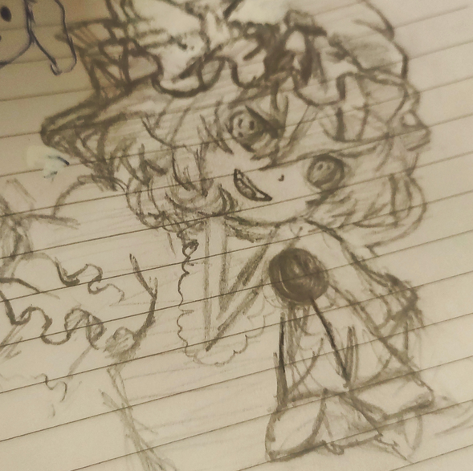

Welcome To My Website
Ello, This is ek9no's Playground
This is my little corner of the internet where i share whatever i like and My Projects I mostly do on Making New Webpage.
I'm a self-learner And An Artist, Or i might be a psychologists specially for myself.
Want to know more things I love? you can visit this page: Kekopage